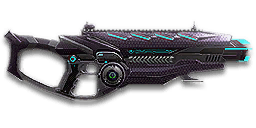

← Back to the Pulsar VS1 comparison
Sage Guide · Vanu Sovereignty · Combat Medic
The gun every VS Combat Medic starts with. Auto-granted, no certs spent — this page teaches you to win fights with it today, and to keep your squad alive while you do it.
The one-line verdict: a balanced, easy-handling rifle that plays like a point-and-click tool: gentle recoil, a fast 1.75 s reload, and no bullet drop to think about. It rewards good aim and short bursts, and punishes spray-and-pray. Fight between 10 and 40 metres and it will carry you.

The Pulsar VS1 · Vanu Sovereignty · 30-round battery magazine
Picture the scene, because you've probably lived it: you're sprinting across a courtyard, an enemy appears, and you do everything at once — hold the trigger down while you're still running, then press aim-down-sights (ADS) a split-second later, finger still down. The sight picture snaps in, it looks precise… and your bullets spray everywhere except the man in your crosshair. He kills you. It feels like the game cheated. It didn't — here's what actually happened.
Three moments, one bad habit. Read left to right.
That's the whole mystery: accurate-looking aim, wildly inaccurate gun. You started firing from a sprint, from the hip — your cone at 7.0°, fully bloomed — and every hipfire shot widened it further (+0.1° per shot). Pressing ADS mid-hold changed the picture, not the bullets.
Slow is smooth, smooth is fast. One beat at a time.
Stop → aim → fire. If you take one habit from this entire page, take this one: 1 · Feet — let go of sprint (and the trigger, if you're already holding it). 2 · Sight — press ADS and let it come up (~0.15 s). 3 · Trigger — now fire, starting from the aimed cone of 0.1° instead of a maxed-out 7.0°. You'll practise exactly this rhythm in the simulator in section 04.
You started firing from a sprint, from the hip. Sprinting is the least accurate state in the game: your cone of fire starts at 7.0° — fully bloomed, the widest it can ever be. Every shot you fire from the hip widens it further still (+0.1° per shot).
Then you pressed ADS mid-hold — and nothing reset. Aiming down sights does not shrink a cone of fire that is already bloomed. The scope only gives you a precise picture; the bullets keep flying out of the wide cone you built while running and hipfiring. That's the whole mystery: accurate-looking aim, wildly inaccurate gun.
Two timers stack the deck further: your gun needs about 0.3 s to settle after a sprint, and raising the sight itself takes ~0.15 s. Trigger held through all of it means your first half-second of fire is pure confetti.
1 · Feet. Let go of sprint (and the trigger, if you're already holding it). Stop, or drop into a strafe — anything but a full sprint.
2 · Sight. Press ADS and let the sight come up. This takes a heartbeat — that's fine, your Nano-Regen Device (F) covers it.
3 · Trigger. Now fire. Starting from the aimed cone of 0.1°, your first shots land where the dot points, and you control the bloom from zero instead of inheriting a maxed-out cone.
Stop → aim → fire. If you take one habit from this entire page, take this one. You'll practise exactly this rhythm in the simulator in section 04.
Every enemy infantry has 1,000 health (500 shield + 500 health). Your bullet does 143 damage up close, fading to 112 at long range. Headshots count double, leg shots count less (×0.9). That gives you three numbers worth memorising:
| Range | Damage | Head | Chest | Legs | Chest vs shielded Heavy |
|---|---|---|---|---|---|
| Close · 0–10 m | 143 | 4 | 7 | 8 | 11 |
| Mid · 11–50 m | 143→125 | 4 | 8 | 9 | 12 |
| Far · 51 m+ | 125→112 | 5 | 9 | 10 | 13 |
Perfect-accuracy times to kill: 4 headshots ≈ 0.26 s, 7 chest shots ≈ 0.52 s up close. In real fights you'll land maybe half your rounds — still, this is why the head matters so much on this gun. Best-case chest times: 0.52 s close, 0.60 s mid, 0.69 s far.
Full power to 10 m, then a steady slide to minimum at 80 m. The teal line shows Soft Point Ammunition, which stretches full power to 15 m.
One gun, four fighting styles. The right technique changes with distance — use the range finder below to see what your bullets do at any range, then learn the four bands underneath it.
How to fight hereAim down sights at the upper chest and neck. Fire in bursts of 5–8 — your recoil climbs into the head for free damage.
Aim: centre of the chest, from the hip. Keep moving.
Scoping in costs you time and halves your move speed — at arm's length that gets you killed. The Pulsar's hipfire is tighter than most LMGs' (2.0° standing), and inside 8 m the 0.28 m ring sits well inside a chest. Strafe side to side (A/D) while firing so you're hard to track, and let your Nano-Regen Device top you up between duels.
Aim: neck / upper chest. Bursts of 5 rounds.
This is where the gun earns its keep: full 143 damage, mild recoil, and low bloom (0.05° per shot aimed). Your cone grows a little with every shot, so a short 5-round burst stays tight. Start your crosshair at the neck — the natural upward climb walks your shots into the head, and 4 head hits end the fight in about a quarter of a second. Strafe while scoped; you're slower, but a moving target still beats a still one.
Aim: chest. Bursts of 5 rounds, pause between them.
Damage is sliding toward 125 and your cone of fire grows with every shot. Fire a burst, release for a split second to let accuracy reset, fire again. The recoil drifts up and to the right (17–20°), so pull your mouse gently down and to the left. Crouch or stand still when you can — both tighten your shots.
Aim: chest. Taps of 3–5 rounds at exposed targets only.
At 112 damage you need 9 chest shots — a long, loud advertisement of your position. Take these shots at stationary or fleeing targets, engineers on turrets, and snipers holding still. And remember the Vanu gift: no bullet drop, so aim straight even out here. Otherwise, your better play is to close the distance behind cover. Knowing when not to shoot is a skill too.
Your accuracy is decided by two things before skill even enters it: what your body is doing (your stance sets the starting cone of fire) and what your finger is doing (holding the trigger grows that cone with every shot). The Pulsar VS1 does have a semi-auto mode (press B), but the "firing modes" that matter are mostly something you do with your finger, not a setting on the gun — full-auto with disciplined bursts covers nearly everything.
| Stance | Starting cone | What it means for you |
|---|---|---|
| Sprinting | 7.0° | Maxed out — the widest the cone can be. This is the section 01 disaster: never start firing from a sprint. |
| Hipfire, moving | 2.5° | Walking or strafing from the hip. Fine inside ~8 m, leaks rounds past the target beyond it. |
| Hipfire, standing | 2.0° | Your point-blank default. The 0.28 m ring at 8 m in section 05 is this stance drawn out. |
| Hipfire, crouched | 1.5° | The tightest hipfire you have (2.0° if you crouch-walk). Crouch when holding a doorway from the hip. |
| Aimed (ADS), feet planted | 0.1° | Standing or crouched makes no difference here — twenty times tighter than hipfire. This is why section 01's order matters. |
| Aimed (ADS), strafing | 0.25° | Two and a half times wider than planted (0.15° if you crouch-strafe), but still eight times tighter than hipfire — and you move at half speed (0.5×). Strafe between bursts to stay hard to hit; plant your feet during each burst. |
| Mode | How your finger does it | Use it at |
|---|---|---|
| The mag dump | Hold the trigger and don't let go | Point blank only, or suppressing a doorway. The first shots are the tightest, but past ~8 rounds the bloom (0.05° per shot aimed, 0.10° from the hip) has grown enough that you're spraying, not aiming. |
| Bursts — the default | Hold for 5 rounds, release ~0.15 s, hold again | Almost everything, 8–50 m. Each release resets the cone, so every burst starts at 0.1° — and 5 rounds is the burst to make automatic — short enough to stay tight, long enough to kill. |
| Tap-fire | Short taps of 3–5, or single clicks, with a real pause between | 50 m and out, at exposed or stationary targets. Slow, but every round goes where the dot is. |
| Semi-auto (B key) | One shot per click — the gun's built-in tap-fire | 50 m and out, when you don't trust your finger to stop at 3–5. Same accuracy as tap-fire in full-auto, but the gun enforces the pause for you. |
One more rhythm worth knowing: standing still, your first 3 aimed shots are the free window — after 3 shots your cone has grown to 0.25°, exactly the 0.25° moving minimum, so starting to strafe then costs nothing. The cone still grows during those 3 shots; the window is about the switch to moving, not about bloom pausing. (This is the Ideal ADAD rhythm: 3 free still shots, then move.)
A target 30 m away, aiming down sights. Press and hold FIRE (mouse, touch, or hold Space with the button focused) and watch the holes walk wider the longer you hold — that's firing from an ever-growing cone. Release, let the cone reset, fire again. Aim for bursts of 5; 6–8 is tolerable while you're new. This practice window is shared by the whole Sage series: it's driven by a weapon profile plugged into the window — here the Pulsar VS1's (698 RPM, 0.10° starting cone, 0.05° bloom per shot, target at 30 m) — and the spread is drawn at true scale from those numbers.
Cone of fire — fills as you hold, empties when you release. The cone grows from the very first shot; the first 3 still shots are only "free" in the sense of the ADAD note above — they cost nothing when you start strafing, not because bloom pauses.
Your bursts will be graded here — green at 5 rounds, tolerable up to 8.
Some things are easier to show than to say. Here's what your bullets actually do: how wide hipfire spreads at 8 metres, what a good burst rhythm looks like, and what the 2x sight really changes. The hands-on version — holding the trigger yourself — is the practice window in section 04.
A full-size target 8 m away — an arm's-length room fight. The rings show where hipfire rounds land around your aim point (the chest). Sizes are drawn to scale from the gun's real cone-of-fire numbers.
Read it this way: standing still, the 0.28 m ring sits well inside the chest — most rounds hit a target this size, which is why hipfire works point-blank. But move and it grows to 0.35 m — still on the torso, but the edge rounds start drifting toward the shoulders, and the rings only grow with distance while the man doesn't. Past ~10 m that's rounds missing entirely: the exact moment to switch to aiming down sights, where the spread shrinks to a dot. (Ring sizes use the real geometry: spread diameter = 2 × distance × tan(cone ÷ 2).)
Every shot widens your cone of fire ("bloom"). Releasing the trigger for a heartbeat resets it. Same 15 rounds, two very different outcomes:
The target pattern is bursts of about 5 rounds — that's the ideal. Bursts of 6–8 are fine while you're new (call it newbie tolerance). Past that, the bloom (0.05° per shot aimed, 0.10° from the hip) keeps growing with every shot, so the extra bullets mostly decorate the wall behind your enemy instead of hitting him. Short bursts also leave you rounds for the second enemy — remember, the magazine is only 30, so a 15-round spray is half your magazine gone.
No zoom. The target at 35 m is small but the view is wide open — you see the crate, the tower, and the next enemy coming. Fast to aim, nothing blocks your edges. Best inside ~40 m.
Same target, same 35 m — but he looks twice as tall, so placing shots on his chest and head gets much easier. The price: your view narrows to the round window, the crate and tower are gone, and close targets feel fast and huge. Best at 25–50 m.
That's the whole 5-cert decision from section 06 in one picture: 1x for awareness, 2x for precision. Most veterans carry both and swap per base — indoors 1x, open ground 2x.
Good news: your two most important attachments — the 1x reflex sight and the Forward Grip — are already on the gun, free, and the gun itself is auto-granted. Your most important buys are cheap: the 2x sight (5 certs) and Soft Point Ammo (100). Buy in the order shown and stop whenever the gun feels right. Four things this gun can never mount, so don't go looking for them: High Velocity Ammunition, the Extended Magazine, any underbarrel attachment, and the Heavy Barrel — those belong to the burst and select-fire variants, not yours.
A clean dot-and-circle reticle sight with no zoom. Your default, and honestly your best all-round option.
Good: everywhere indoors and out to ~40 m — which is most PlanetSide fights.
Bad: picking out targets past 50 m; that's what the 2x is for.
Doubles your view magnification. Costs almost nothing — the price of one kill or two.
Good: open-field bases, tower fights, and your 25–50 m burst game. Swap between 1x and 2x per fight.
Bad: tight indoor rooms — the zoom makes close targets feel fast and huge.
Night-vision sight: enemies glow white against a dark view, and it sees through smoke.
Good: night fights, smoky doorways, spotting infiltrators by their outline.
Bad: daytime and long range — its view is short-ranged and washes out in bright light.
VMS / V3 Holo (3.4x) and OG-4 / CSZ (4x) — sniper-style magnification on an automatic rifle.
Good: almost nothing a beginner does — recoil magnifies too, and tunnels your vision.
Bad: any fight inside 30 m, which is where you'll spend your first hundred hours.
The Pulsar's recoil is already mild. Plenty of veterans run this slot empty forever.
Good: your first weeks. Spend certs on your Medical Applicator and Nano-Regen Device first.
Bad: nothing — there's no downside to an empty slot.
Cuts vertical recoil by 30%. Costs you: hipfire spread grows 15%, and enemies see you on the minimap from 35 m farther away when you fire.
Good: if you mostly aim down sights at mid-range and the upward climb bothers you.
Bad: hipfire builds and sneaky play — you get louder on the map and sloppier from the hip.
Hipfire bloom grows 40% slower — much steadier hip spraying. But vertical recoil rises 20% when you do aim.
Good: a dedicated close-quarters build paired with the Laser Sight.
Bad: general play — it taxes the aimed shooting you'll do most.
You vanish from the minimap when firing and your shots are quiet. In exchange, damage starts dropping off 20 m sooner and bullets fly 15% slower (615 → 523 m/s) — harder to lead moving targets.
Good: flanking behind enemy lines, rooftop and tree work, solo play behind the front.
Bad: front-line fighting where everyone already knows where you are — you pay the damage cost for stealth you don't need.
Hides your muzzle flash so your own view stays clear at night — but you appear on enemy minimaps from 15 m farther away.
Good: night fights where your own flash blinds you. A comfort pick, nothing more.
Bad: as an early purchase — it changes no fight outcome. Buy it last, if ever.
Cuts side-to-side recoil by 25%, keeping your bursts on a single target. Tiny cost: weapon swap is 0.15 s slower.
Good: the default for aimed, mid-range play — leave it on until you deliberately build for hipfire.
Bad: nothing meaningful. It only stops helping if you never aim down sights.
Hipfire accuracy improves by a third (33% tighter cone). Replaces the Forward Grip — you can't have both.
Good: indoor point-holds and stairwell fights where you hipfire inside 8 m.
Bad: open bases — you give up aimed recoil control for a bonus you rarely use.
The first shot of each burst kicks 60% less — but side-to-side recoil rises 10% on everything.
Good: disciplined burst and tap-fire at 40 m+, where every burst starts fresh — and anyone who hates the first-shot jump.
Bad: beginners' longer bursts — past the first shot the sideways recoil still rises 10%, so it only pays if you actually release between bursts.
A torch whose beam reveals cloaked infiltrators. Toggle it with the attachment key (X by default).
Good: hunting a stalker infiltrator camping your capture point — sweep corners with it.
Bad: as your everyday rail — it gives zero accuracy help, and the beam advertises your position.
Full 143 damage now reaches to 15 m instead of 10 m (the teal line on the chart above). Cost: bullets fly 10% slower (615 → 554 m/s).
Good: nearly always — most duels happen at 10–20 m, exactly where this extends your 7-shot kill.
Bad: long-range duels against runners, where the slower bullet needs more lead. A small price.
Costs below are attachments only — the Pulsar VS1 is auto-granted to every new VS Combat Medic. It costs 0 certs.
0 certs · Day one
What the game hands you on day one. Genuinely good — learn the gun on this before spending anything.
105 certs · Recommended
The best value in this whole guide. Covers every fight from a doorway to a tower courtyard.
200 certs · Indoor brawler
Built to hipfire down stairwells and hold a capture point room. Swap back to the All-Rounder outdoors.
200 certs · Flanker
No minimap blip, quiet shots, tight hipfire for the kills you take from behind. Weak in a fair fight — so don't take fair fights.
Your Nano-Regen Device (F key) heals you over time, and it only helps if it's on before the bullets arrive. Hear footsteps or expect a corner? Regen on, then peek. A Medic who starts a duel already healing wins trades a Medic who starts one at half health loses.
Headshots deal double damage: 4 kills up close versus 7 to the chest. Don't aim at the head directly — aim at the neck and let the gun's natural upward climb carry shots two and three into the skull. It's the single biggest damage upgrade you own, and it's free.
Every shot widens your cone of fire. Holding the trigger past ~8 rounds at range means later bullets fly around your target, not into it. Five rounds is the ideal burst; release the trigger for a heartbeat between bursts — your accuracy resets and your hits per magazine roughly double.
Reloading with even 1 bullet left takes 1.75 s; an empty gun takes 2.2 s — an eternity mid-fight. Count roughly: after a kill or ~20 rounds, duck behind cover and reload early. Treat the last 10 rounds as your emergency reserve, not your working magazine.
Walk with your crosshair at head height, pointed where an enemy's head will appear — a doorway edge, a corner, stairs. Most beginners lose fights in the half-second spent dragging the crosshair onto target. While firing, tap A/D to strafe: a moving Medic is dramatically harder to headshot back.
Your damage and accuracy all shine at close-mid range. Sprint between cover, use buildings and rocks as stepping stones, and arrive at your range before opening fire. The player who chooses the range usually wins the duel — make it you. Revive the same way: clear the room first, then bring your squadmate back — a revive in a live fire lane just makes two corpses.
Every gun has a price. Here's where the Pulsar VS1 pays — and the habit that covers each hole.
698 RPM sits in the middle of its class. The TR Cycler fires 750 RPM — if you and an enemy Medic trade chest shots face-to-face, their bullets add up faster than yours (0.48 s to your 0.52 s).
Play around it: don't trade fairly. Regen first, aim for the neck, and use corners — your accuracy and fast reload win fights that start on your terms.
Thirty rounds vanish fast when suppressing a doorway, and there is no extended-magazine option on this gun at all.
Play around it: burst discipline (habit 3) and early reloads (habit 4). Your 1.75 s reload is one of the fastest in the game — reloading often is the design, not a failure.
At 2.0° standing your hipfire is workable, but it's still twenty times wider than your aimed cone — and strafing opens it to 2.5°. Inside 8 m you're fine; past that, hipfire leaks rounds.
Play around it: aim down sights from 8 m out, where your 0.10° cone and low bloom take over.
Past 80 m you're at 112 damage: 9 chest shots, 13 against a shielded Heavy, with bloom fighting you the whole way. Snipers and battle rifles own that ground.
Play around it: tap-fire at exposed targets only, and spend the rest of the time closing distance. You're a Medic — your squad needs you alive at the front, not plinking from a hill.
Its recoil angle is 17–20° rightward, and the first shot kicks 2.75× — the biggest first-shot jump of any starter rifle. In a long burst your aim walks off the target's right shoulder — you'll see this clearly in the VR drill below.
Play around it: pull your mouse down-left while firing, in the opposite direction of the climb. The Forward Grip already trims the sideways part by 25%, and the Angled Forward Grip tames the first-shot jump if it keeps throwing you off.
Like all rifles, you move at half speed while aiming down sights (0.5x), and swapping to your Medical Applicator takes a beat — slow if a fight surprises you with your tool out.
Play around it: hipfire inside 8 m instead of scoping (that's the Point Hold build's whole idea), and swap tools behind cover, never in the open.
This guide is VS-only, but your enemies aren't. A TR Medic starts with the T1 Cycler, an NC Medic with the NC1 Gauss Rifle, and a Nanite Systems Operative — the robot soldier — is handed the AR-100 automatically. Same job, four different trade-offs — here's yours next to theirs, from the same data feed. (The NS-11A is not on this page: it's a 1,000-cert purchase, not a starter.)
| Stat | Pulsar VS1 VS · you | T1 Cycler TR | NC1 Gauss Rifle NC | AR-100 NSO · auto-granted |
|---|---|---|---|---|
| Damage per bullet | 143 → 112 | 143 → 112 | 167 → 125 | 143 → 112 |
| Fire rate | 698 RPM | 750 RPM | 600 RPM | 667 RPM |
| Magazine | 30 | 40 | 30 | 30 |
| Reload (rounds left) | 1.75 s | 2.76 s | 1.95 s | 1.8 s |
| Bullet velocity | 615 m/s | 580 m/s | 620 m/s | 550 m/s |
| Chest shots to kill | 7 / 8 / 9 | 7 / 8 / 9 | 6 / 7 / 8 | 7 / 8 / 9 |
| Move speed while aiming | 0.5× | 0.5× | 0.5× | 0.5× |
Shots to kill are shown close / mid / far, matching the three bands in section 02. Your edge in one line: the fastest short reload of the four starters (1.75 s), no bullet drop to correct for, and a first-shot cone as tight as any of them. Your price: the middle fire rate, so a miss costs you more than it costs the Cycler.
The famous gap is real: up close the Cycler kills in 0.48 s to your 0.52 s. But the Gauss Rifle — the hard-hitting NC starter — is a dead heat with you at mid range (0.60 s each) and slower than you past 50 m, because your 698 RPM beats its 600. And the AR-100 is slower than you in every band. Same damage model, different fire rates — that's the whole table.
| Range band | Pulsar VS1 · you | T1 Cycler | NC1 Gauss Rifle | AR-100 |
|---|---|---|---|---|
| Close · 0–10 m 7 / 7 / 6 / 7 shots |
0.52 s | 0.48 s−7.0% · 36 ms faster | 0.50 s−3.1% · 16 ms faster | 0.54 s+4.7% · 24 ms slower |
| Mid · 11–50 m 8 / 8 / 7 / 8 shots |
0.60 s | 0.56 s−7.0% · 42 ms faster | 0.60 s−0.3% · 2 ms faster | 0.63 s+4.7% · 28 ms slower |
| Far · 51 m+ 9 / 9 / 8 / 9 shots |
0.69 s | 0.64 s−7.0% · 48 ms faster | 0.70 s+1.7% · 12 ms slower | 0.72 s+4.7% · 32 ms slower |
Percentages are worked from the rounded refire-ms times to kill — 86 ms between shots for you, 80 ms for the Cycler, 100 ms for the Gauss Rifle, 90 ms for the AR-100 — with your time as the denominator, so they won't match exactly if you redo them from the rounded seconds. Each gun's own falloff edges differ by a few metres (the Gauss Rifle holds full damage to 90 m); the bands above are yours, and the comparison is band-to-band. Read the pattern: the Cycler is a flat 7% faster than you in every band, the Gauss Rifle is a dead heat at mid range, and the AR-100 is a flat 4.7% slower everywhere.
Nobody fires the instant an enemy appears. A typical duel adds about 150 ms of human reaction plus about 50 ms of ping — 200 ms of overhead before the time-to-kill clock even starts. Both players pay it, so it shrinks every percentage gap above.
| Range band | Pulsar VS1 · you | T1 Cycler | NC1 Gauss Rifle | AR-100 |
|---|---|---|---|---|
| Close · 0–10 m | 0.72 s | 0.68 s−5.0% (was −7.0%) | 0.70 s−2.2% (was −3.1%) | 0.74 s+3.4% (was +4.7%) |
| Mid · 11–50 m | 0.80 s | 0.76 s−5.2% (was −7.0%) | 0.80 s−0.2% (was −0.3%) | 0.83 s+3.5% (was +4.7%) |
| Far · 51 m+ | 0.89 s | 0.84 s−5.4% (was −7.0%) | 0.90 s+1.4% (was +1.7%) | 0.92 s+3.6% (was +4.7%) |
The ± matters more than the headline. That 200 ms is an average, not a promise: reaction time easily swings 100–250 ms with surprise, fatigue and who saw who first, and ping varies by server and connection. Up close, the Cycler's whole advantage is 36 ms — smaller than the normal wobble in your own reaction, and the Gauss Rifle's is just 16 ms. React a fraction sooner, pre-aim the doorway (habit 5), or land one headshot, and it's gone. At range the Cycler edge grows to 48 ms — just over half of one of your 86 ms shot intervals — so range is where you respect it: break line of sight and close in instead of trading.
The hose. 750 RPM and a 40-round magazine — it wins a straight hold-the-trigger trade up close, 0.48 s to your 0.52 s.
How you beat it: don't trade mag dumps. Peek, burst, and break line of sight. And punish the reload — at 2.76 s it's the slowest short reload here. Push the moment you hear it click dry.
The hammer. 167 damage, 6 shots to kill up close, the fastest bullets here (620 m/s) and the longest reach — full damage to 90 m.
How you beat it: up close it's 16 ms ahead of you; at mid range it's a dead heat (0.60 s each); past 50 m your fire rate pulls ahead by 12 ms. But it only holds 30 rounds like you, and every miss costs it 100 ms — a full shot interval more than yours. Make it miss: strafe between bursts.
The robot's rifle. What every Nanite Systems Operative is handed on day one: 143 damage at 667 RPM — slower than you in every band (24–32 ms) — with the slowest bullets here (550 m/s) and a quick 1.8 s reload that's nearly as fast as yours.
How you beat it: you kill faster in every band and your bullets fly straighter and faster, so take the aimed duel at 15–40 m. Don't count on a reload window — at 1.8 s it's back almost instantly. Win it on aim, not on timing.
The all-rounder. Middle of the pack on paper in every column — and that's the point. Fastest short reload here (1.75 s), no bullet drop to correct for, and a first-shot cone as tight as any of them.
Your discipline: a miss costs you 86 ms — more than a Cycler miss costs them (80 ms). That's the whole gun in one fact: aim first, then fire, in the bursts from sections 03 and 04, and the percentages above stop mattering.
Open the world map, travel to VR Training, and run these on the target dummies. Five minutes before a play session beats an hour of dying confused.
Aim at a wall 20 m away and empty a full magazine without touching the mouse. Watch the bullet pattern climb up-right (17–20°) — that's your gun's fingerprint. The first shot jumps hardest (2.75×), so watch for the gap between hole one and hole two. Repeat, this time pulling down-left, until the group stays fist-sized.
Walk the dummy range keeping your crosshair glued to neck height the whole time, snapping to each new target without dipping to the floor or sky. Slow and clean first; speed comes on its own.
At 30–40 m, kill dummies with bursts of 5, releasing the trigger fully between bursts. If a burst goes wide, shorten it. Goal: whole kills without a single wild round.
Pick a dummy, stand 5 m away, and circle it with A/D while hipfiring it down without stopping. This is your point-blank survival skill — the one that fires while your movement and Nano-Regen do the defending.
Fire exactly 20 rounds, step behind a pillar, reload, repeat. Train your hands to reload early and only in cover until it's automatic — in real fights you'll do it without thinking, which is the point.